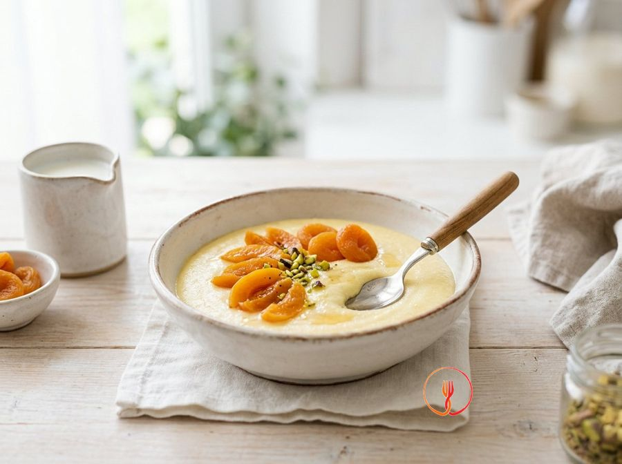

Crema di Semolino al Latte e Albicocche Secche
Una colazione calda e vellutata che sfrutta la dolcezza naturale delle albicocche secche rinvenute nel latte. Il semolino garantisce una consistenza liscia perfetta per la fase di transizione ai cibi solidi.
Una crema vellutata e densa, perfetta come fine pasto o spuntino energetico in ogni momento della giornata. Il sapore neutro del semolino viene esaltato dalla dolcezza concentrata delle albicocche secche.
Ingredienti
- Semolino di grano60 g
- Latte intero500 ml
- Albicocche secche (senza zuccheri aggiunti)6 pz
Allergeni
Glutine, Latte
Procedimento
- Inizia immergendo le 6 albicocche secche in un piccolo contenitore con un po' di latte tiepido per circa 15 minuti. Questa operazione preliminare permette alle fibre del frutto di reidratarsi completamente, rendendole morbide e facili da lavorare per ottenere una consistenza perfetta. Assicurati che siano totalmente sommerse affinché la reidratazione avvenga in modo omogeneo in ogni parte del frutto. Al termine del tempo, le albicocche dovranno apparire gonfie e molto cedevoli alla pressione delle dita. Il mio consiglio è di usare parte dei 500 ml di latte previsti dalla ricetta per non diluire la componente zuccherina naturale del frutto.
- Prendi le albicocche rinvenute, scolate dal liquido, e tritale finemente su un tagliere con un coltello ben affilato oppure utilizza un piccolo frullatore a immersione aggiungendo un cucchiaio del latte di ammollo. Lavora il composto con pazienza fino a ottenere una pasta liscia, densa e assolutamente priva di pezzi grossolani che potrebbero compromettere la setosità della crema. Questa purea sprigionerà un profumo zuccherino e un colore arancio vibrante che caratterizzerà tutto il piatto. Il segreto dello chef è passare la purea attraverso un colino a maglie strette se desideri un risultato gourmet, eliminando ogni residuo di buccia.
- Versa i restanti 500 ml di latte intero in un pentolino dal fondo spesso, che garantisce una diffusione uniforme del calore, e ponilo sul fuoco a intensità moderata. Riscalda il liquido lentamente, mescolando di tanto in tanto con un cucchiaio di legno per evitare che si formi la pellicina proteica in superficie. Spegni la fiamma o abbassala al minimo non appena noti le prime piccole bollicine salire lungo i bordi del pentolino, segno che il latte ha raggiunto quasi il punto di ebollizione. Dovresti ottenere un liquido caldo e fumante, pronto per la fase di addensamento. Fai molta attenzione a non far bollire il latte vigorosamente per non alterarne la nota dolce e delicata.
- Prendi i 60 g di semolino di grano e inizia a versarlo a pioggia nel latte caldo, mantenendo la fiamma molto bassa per un controllo totale. Mentre versi con una mano, usa l'altra per mescolare energicamente con una frusta a mano, creando un piccolo vortice costante al centro del pentolino. Questo movimento rotatorio è fondamentale per distribuire i minuscoli granelli di semolino in modo istantaneo, impedendo la formazione di grumi difficili da sciogliere in seguito. Otterrai inizialmente una miscela liquida, ma già leggermente velata dalla presenza della farina. Il mio consiglio è di versare il semolino molto lentamente: più la 'pioggia' è sottile, più la crema risulterà vellutata e piacevole al palato.
- Continua la cottura del semolino a fuoco dolce per circa 4-5 minuti, senza mai smettere di mescolare con un movimento a 'otto' per toccare ogni punto del fondo del pentolino. Durante questo tempo, l'amido contenuto nel semolino si idraterà e gonfierà, trasformando il latte in una crema densa e avvolgente. Il risultato finale deve essere una struttura morbida e liscia, con una densità simile a quella di una besciamella preparata a regola d'arte. Non accelerare i tempi alzando la fiamma, poiché il semolino rischierebbe di attaccarsi e bruciare, conferendo un sapore amaro. Se noti che la crema si addensa troppo velocemente, solleva momentaneamente il pentolino dal calore.
- Una volta raggiunta la giusta cremosità, allontana il pentolino dal fuoco e incorpora immediatamente la pasta di albicocche che hai preparato in precedenza. Usa una spatola o la frusta per amalgamare la purea di frutta, distribuendola in modo uniforme in tutta la massa della crema calda. Noterai che il colore della preparazione virerà dal bianco latte a una delicata e invitante tonalità avorio o pesca. Continua a mescolare finché non vedrai più striature di colore diverso e la crema apparirà perfettamente omogenea. Il consiglio dello chef è di aggiungere la frutta sempre a fuoco spento per preservarne intatto l'aroma fresco e naturale senza cuocere ulteriormente gli zuccheri.
- Prima di procedere all'impiattamento, valuta con attenzione la consistenza finale della tua crema sollevandone una piccola quantità con un cucchiaio. Se dovesse apparire eccessivamente soda o compatta, aggiungi un piccolo goccio di latte tiepido e amalgama con decisione per riportare la fluidità desiderata. La crema ideale deve risultare morbida e facile da deglutire, con una texture che ricorda un budino tenero appena fatto. Tieni presente che il semolino, raffreddandosi, tende a tirare e solidificarsi ulteriormente, quindi è preferibile lasciarlo leggermente più fluido in questa fase. Assicurati che non ci siano separazioni tra la parte fluida e quella più densa del semolino.
- Distribuisci con cura la crema di semolino ancora calda in quattro ciotoline monoporzione, livellando la superficie con il dorso di un cucchiaino leggermente inumidito con acqua o latte. Lascia riposare il dessert a temperatura ambiente per almeno 5-10 minuti prima di servirlo, permettendo ai sapori di stabilizzarsi e alla temperatura di diventare ideale per la degustazione. La superficie della crema si stabilizzerà creando una finitura opaca e setosa, molto invitante alla vista. Per un tocco di classe, puoi decorare ogni porzione con un sottile velo di cannella o una piccola guarnizione di frutta. Il tocco finale dello chef: se vuoi evitare la formazione della pellicina in superficie durante il riposo, copri le ciotoline con della pellicola alimentare posta direttamente a contatto con la crema.
Consigli
- Versa il semolino a pioggia molto lentamente per evitare la formazione di grumi fastidiosi.
- Lascia riposare la crema qualche minuto prima di servire per ottenere la consistenza ideale.
- Se le albicocche sono molto dure, aumenta il tempo di ammollo nel latte tiepido.
Varianti
- Usa prugne secche tritate al posto delle albicocche per una versione dal colore più scuro.
- Guarnisci con una grattugiata di scorza d'arancia per profumare intensamente il semolino.
Valori nutrizionali (stima)
| Per porzione (150 g) | Per 100 g | |
|---|---|---|
| Energia | 665 kJ / 159 kcal | 443 kJ / 106 kcal |
| Proteine | 6.4 g | 4.3 g |
| Carboidrati | 23.5 g | 15.7 g |
| di cui zuccheri | 11.5 g | 7.7 g |
| Grassi | 4.7 g | 3.1 g |
| di cui saturi | 3.0 g | 2.0 g |
| Fibre | 0.8 g | 0.5 g |
| Sale | 0.12 g | 0.1 g |
Valori stimati con l'AI su dati medi CREA / USDA: sono indicativi e non sostituiscono il parere di un medico o di un nutrizionista.
Apri la ricetta nell'app per la lista della spesa, le schede ingredienti e i negozi vicini.